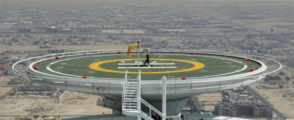

Having the helipad on the right seems more aesthetically pleasing, but have you considered that we maybe don’t need a helipad?
It would be easier to just have the Osprey set down on the road, troops hurriedly running inside. That could make the scene have much more of an urgency to it and place the marines in more of a dire situation. It’d feel like they didn’t plan to land here, but put down in a hurry to evacuate whoever was still left since things were going from bad to worse.
Lol, it was not my intention to suggest that you expand the courtyard and it was only brought up because you’re contemplating a radical revision to the helipad. The only recommendation I was planning to make after the alpha was that you move the hangar slighly to the left to accomodate the corner helipad placement such that it doesn’t overlap w/the road and white door, as this minimizes the damage of the unrealistic layout.
W/regards to the overthinking bit, not really…it’s just extending an argument to see where it would go. The bottom line is that when I look at your work, I always trust my first instinct and what it told me the moment I saw your second picture was that the pad placement is problematic, not just aesthetically but functionally and gameplay wise. You’re basically ruining your beautiful aeiral scripts by obstructing player view, making the extension from the hangar more convoluted, possibly obstructing player view of the escaping marines and making the battle more difficult by placing enemies in extremely elevated positions (not to mention the aesthetic issues). First impressions are by far the most important in games, as people will not be playing your map more than once or twice. As a side note, I think this is the reason why the devs ran into so many game balance problems. They’ve played through their maps so many times that they forgot about their first impressions. The enemies eventually became too easy w/repeat testing, so they ramped up their difficulty and occasionally placed them in bullshit spawn positions, which is probably the reason why they’ve taken so much flak.
If you don’t want to extend the courtyard, that’s fine and it just leaves the discussion of the corner pad and the elevated pad. From a realism standpoint, both options kinda suck so the goal is to pick the lesser of the two evils. Based on your work, I am heavily favoring the corner layout for functional and gameplay reasons, but since everyone else is really clamoring for your new revision, why not just use it in the alpha? I’d only recommend that you don’t get too attached to it and be willing to revert to the corner layout if need be.
P.S. I hope you’re saving copies of the maps prior to planning major revisions as this will minimize the amount of backtracking you have to do if your new ideas don’t pan out.
We have a winner here. This is your best option by far but make sure that the hangar walkway is logically designed such that it doesn’t significantly obstruct the windows.
Edit: Also, you must keep that sand layout to the left of the original road. A second road would be implausible.
If it ends up on the right it should probably have a walkway running along the building to the helipad?
@wangman exactly why i think it should go on the right the structure clearly obstructs the windows so your now saying this is better but redesign the helipad?
I’ve put it on the right. That walkway won’t look as nice it would were the helipad on the left, BUT it makes the aerial battle and the soldiers running VERY obvious. The reason being the soldiers now have to cross directly in front of you to get to the Osprey. The other bit of reasoning is that I reckon most players will take shelter in the army tent on the right hand side of the road upon reaching the area. While here, with the elevated Helipad on the left, the Osprey/Helipad still obscures a fair amount of your view of the stuff flying overhead. With it on the right it’s not a problem at all.
So, weighing up the positives/negatives, on the right is best, I think.
Pros:
Best view of the aerial battle
Best view of the soldiers running
Still a realistic enough position - moreseo than on the left - more space in all directions
Better view of the 3D skybox when you’re up on the helipad when it’s on the right
Left is better. Placement of the helipad has no real bearing on the aerial battle. You can place a pair of HECU guarding the Osprey during the evacuation, which looks more realistic from a left-sided placement. They can be blown off the pad when the manta kills the Osprey, which would look awesome. Also note that the HECU don’t have to lose every battle…they just have to look preoccupied.
Right side is not realistic…simply put, flying shit needs to be by flying shit, not vehicle shit. Keeping the second bunker (w/o the LAV) is nice because it reinforces the design element of the first bunker.
A suggestion for the pad: use one pillar instead of four (see images).

think you are overthinking it. right is better do to location, its away from the hanger, and out of the main view of the air events, it also shows the soldiers moving better, game play wise right is better. this isn’t RL and even in RL right would be better do to the fact it is farther from the hanger.
EDIT: hate to say it but the best thing to do would be to remove the landing pad all together, and have the osprey landed near the right area facing away from the player.
You can’t just discount my entire argument by saying it “has no real bearing on the aerial battle,” when you were the one who used that as an argument against a central placement. When the helipad is both elevated and on the left, it blocks the view of the aerial battle when you are inside the army tent, which is logically where most players will be. Therefore, it is important. That’s why I’m putting it on the right. I have kept the second bunker but retracted it back into the building. It looks fine. I just need a way to make the walkway look like it isn’t floating magically.
tether cables connected to the building would work, (seen it before on bridges)… but wouldn’t really make sense. best way its to put iron bars connected to the building and the walk way.
EDIT: I edited my above post right before you posted… it has an idea but it would make what you have done a waist of time.
I like the right side placement, but is there any reason you placed it over the entrance of the second hangar instead of between the two hangars on the right?
[ninja EDIT] For what it’s worth, I think the heli pad would work best on ground level in the center of the courtyard, fuck the roads.
Hi TexFamGuy.
I stay away for a couple of hours and when I get back y’all have written other 2 pages, amazing…
I have an idea:
What if the helicopter isn’t placed on a proper landing area but on a circular crossroad?
(see image below)
It’s a doodle but I think that explain my idea.
This layout would make this part of the map more simple and polished and the explosion would happen in front of the player.
Don’t know If you like my Idea but I had to show you.
By the way, looking forward to play it!!!
I didn’t think about it from an army tent perspective but there’s no contradiction to what I’m saying. Central placement obstructs the flight path of the manta and harrier for far too long because it covers the part where they first fly in AS WELL as the time they are directly over the pad. Corner placement minimizes the obstruction to the flight path, as observed by the player.
Hell if this is really an issue, why not move the manta and harrier more to the right? Problem solved w/minimal effort. You get a more logical left pad placement and don’t need to tamper w/the right side of the map.
here is my 2 cents, may there 2 2 paths to the copter pad. the black lines in the paint image represent them, the orange represents the soldiers movement. the blue one is a ladder.
Moved it to the left, the with the right side placement the walkways are just aggravating as hell. The floating walkways across the road looks ridiculous and there’s no way to add support to them which doesn’t block the road or look stupid. While darkone’s idea is nice it makes the HECU path to the helipad way too long and overblown and it’s a very convoluted path anyway. Coupled with the fact it would allow the player to jump onto the silos where the edge of the map is…left is better.
Grr. Wasting so much time. I’m afraid you guys won’t see an alpha release tonight, and possibly not tomorrow either. Friday is my patented hell day at uni where I have lots and lots of classes. So, most likely Saturday. Sorry to keep everyone waiting.
if you have the hecu start where my path starts it wouldn’t make if to long. still over blown but not to long… maybe if the ramp was rapped around 2 sides of it with teh entry close to the road, you could simplify the path.
Good to see it back on the left where it belongs…it’s going to save you from more work in the long run. Don’t worry bout the alpha. School’s way more important than some silly mod so take your time w/it.
agreeed with the two guys beyond me… I wouldn’t bother if there was no helipad at all… I mean, VTOLs are capable of difficult maneuvers and in critical situations they could land in the middle of the road or something… so the helipad is somehow redundant anyway to me. But I think the current placement serves it’s purpose very well.
Edit: Alsooo, don’t give too much time to please every suggestion or remark. Your Alpha testers will address gameplay issues when they have played the maps, so I would concentrate on the layout and workability of the maps, then on gameplay mechanics, and then on polishing… Again just a suggestions, as if you hadn’t enough of them already
Founded in 2004, Leakfree.org became one of the first online communities dedicated to Valve’s Source engine development. It is more famously known for the formation of Black Mesa: Source under the 'Leakfree Modification Team' handle in September 2004.


{kind=link}